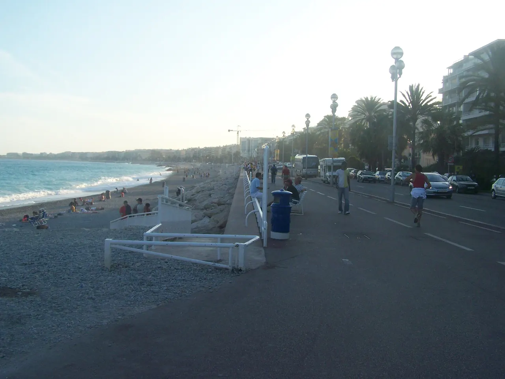

Promenade des Anglais

| 지역 | Nice |
|---|---|
| 등급 | Must |
| 언제 | 일정에 배정된 날을 시간표에서 찾지 못했다 |
| 상세 | 챕터 본문에서 보기 |
참고
오프라인입니다. 위키백과와 지도 링크는 연결되면 다시 동작합니다.
니스를 상징하는 7km의 평탄한 해안 대로다. 단순한 관광 도로가 아닌 니스 시티 라이프의 심장부다. - 왜 가는가: 지중해의 파란 수평선을 바라보며 평지를 걷는 것만으로도 시차 적응과 피로 회복에 좋다. - 최적 방문: 체류 30–60분 | 일몰 전 45–60분 (해안선 전체가 분홍빛으로 물드는 시간). - 실무 안내: 자전거 및 롤러블레이드 전용 차선과 보행자 도로가 명확히 분리되어 있으므로 산책 시 충돌에 유의해야 한다. 해변 근처 공용 벤치에 잠시 앉아 바다 소리를 듣는 것 자체가 니스의 대표 경험이다.